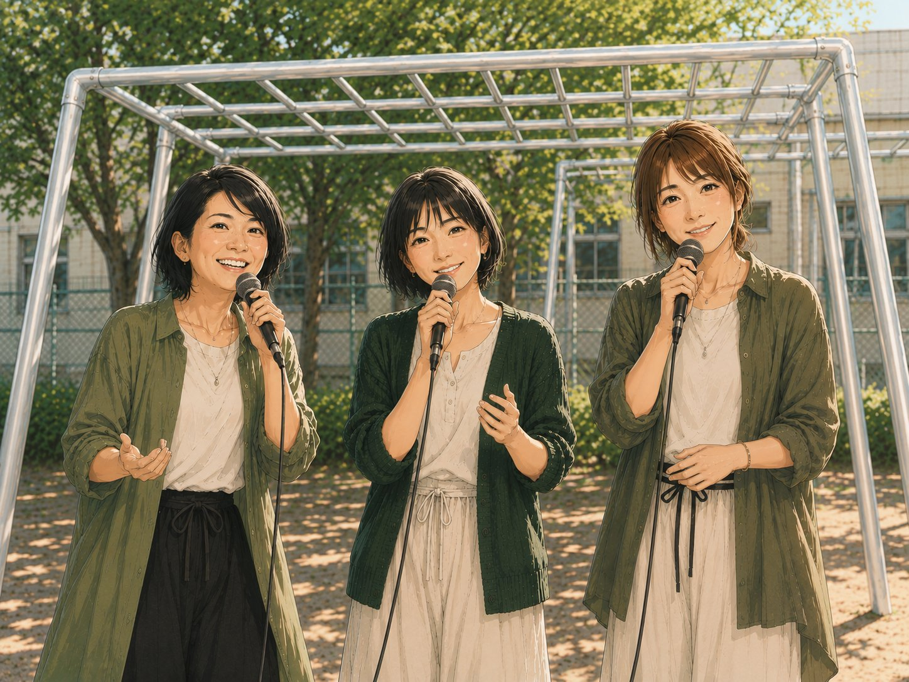

Platanus — Women's A cappella Trio
声だけで紡ぐ、三つのハーモニー
About
プラタナスは、40代の女性3人によるアカペラグループです。楽器を持たず、声だけで音楽を奏でます。
グループ名の「プラタナス」は、すずかけの木の学名。大きく広がる枝葉のように、私たちの歌声が重なり合い、ひとつの大きなハーモニーを生み出すことへの想いを込めています。
年齢を重ねてきた女性たちの声が持つ深みと温かさを大切に、様々なジャンルの楽曲に挑戦しています。
Music
現在、音源・動画を鋭意録音・制作中です。
完成次第、こちらで公開していきます。
どうぞお楽しみに。
Join Us
プラタナスでは現在、一緒に音楽を楽しんでくれる仲間を募集しています。
アカペラ・バンド・声楽・合唱の経験がある方、ぜひご連絡ください。

低音パートを担当してくださる方を募集中です。性別問わず、低音域が得意な方を歓迎します。アカペラでのベースラインは、グループのグルーヴを支える大切なポジションです。
声でリズムを刻むボイパ担当を探しています。経験者の方のご応募をお待ちしています。
※ 活動エリア：神奈川県東部
※ 活動頻度：土日を中心に月2回程度
※ 年齢・経歴よりも、一緒に音楽を楽しめる気持ちを大切にしています。
Contact
出演依頼・メンバー募集へのご応募・その他お問い合わせは、以下のメールアドレスまでお気軽にご連絡ください。